Joso, Ibaraki: things to do, food and stays
Joso · Ibaraki
Joso
Highlighted on the Ibaraki map.

Stay
ホテルルートイン水海道駅前
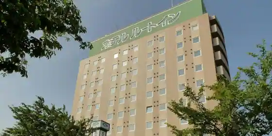
Hotel Route Inn Mitsukaido Ekimae
Hotel in Mitsukaidotakara, Joso; 3-minute walk from Mitsukaido Station.
常総市水海道駅より徒歩1分 割烹 野村屋旅館
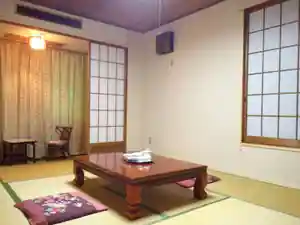
Joso Shisui Kaido Eki Yori Toho 1 Fun Kappo Nomura Ya Ryokan
Ryokan inn in Mitsukaidotakara, Joso; 1-minute walk from Jososhisuikaido Station.
水海道第一ホテル
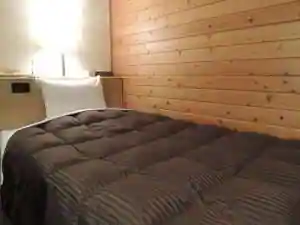
Mitsukaido Daichi Hotel
HOTEL R9 The Yard 常総
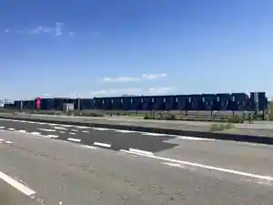
HOTEL R9 The Yard Joso
つくばタウンホテル
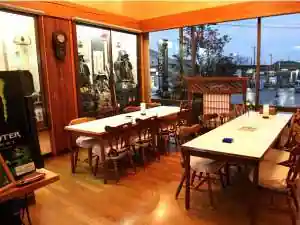
Tsukuba Town Hotel
Hotel in Shinishige, Joso with parking.
かま仙旅館（釜仙旅館）
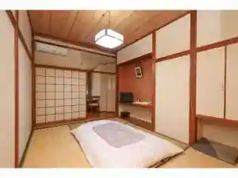
Kama Sen Ryokan (Kama Sen Ryokan)
Ryokan inn in Shinishige, Joso with business travelers.
Dining
拉麺人生
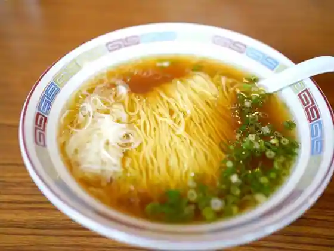
Ramen Jinsei
拉麺 時代遅れ
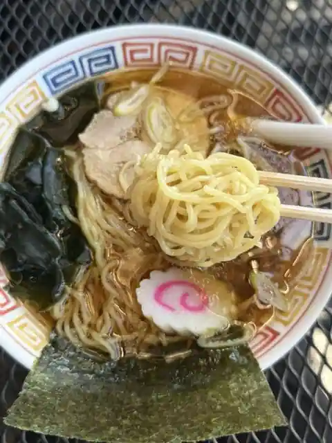
Ramen Jidaiokure
らーめん 又右衛門
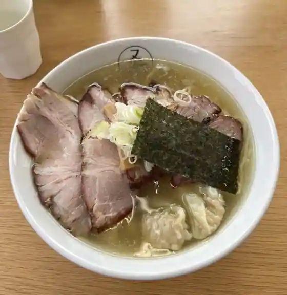
Ramen Mataemon
鶏そば炭や 常総店
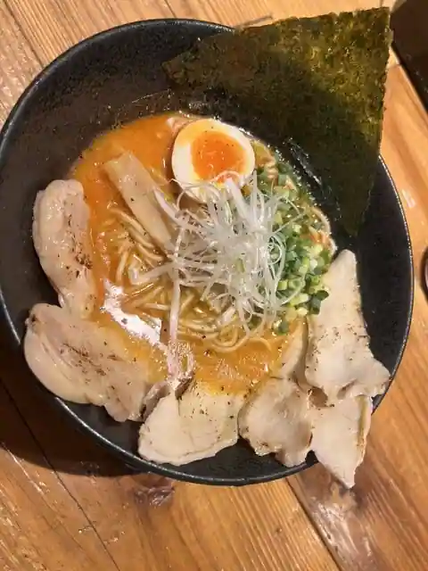
Niwatori Soba Sumi Ya Joso
らーめん すすきの
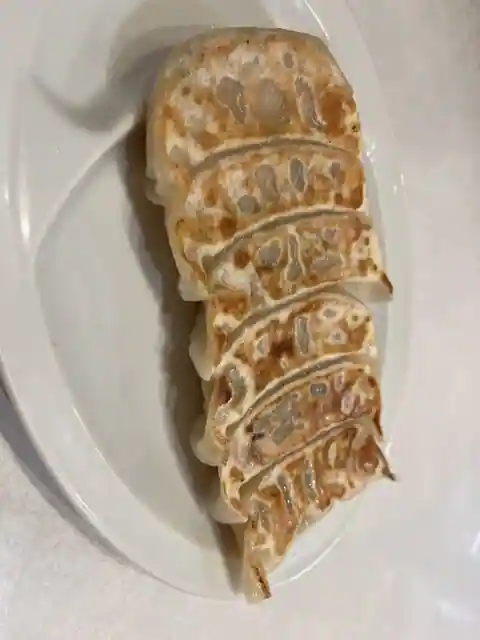
Ramen Susukino
ランディワ
Randiwa
ぼくとメロンとベーカリー
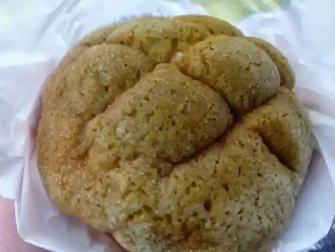
Bokuto Meron To Bakery
常総いなほ食堂
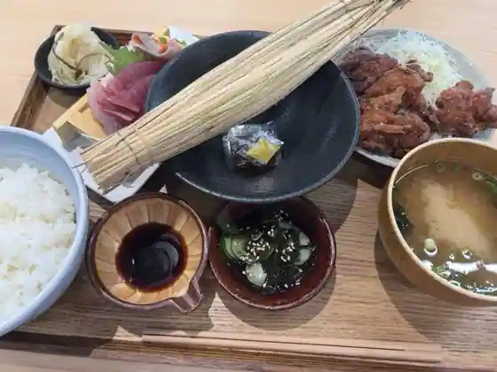
Joso Inaho Shokudo
ぼくとメロンとソフトクリーム。
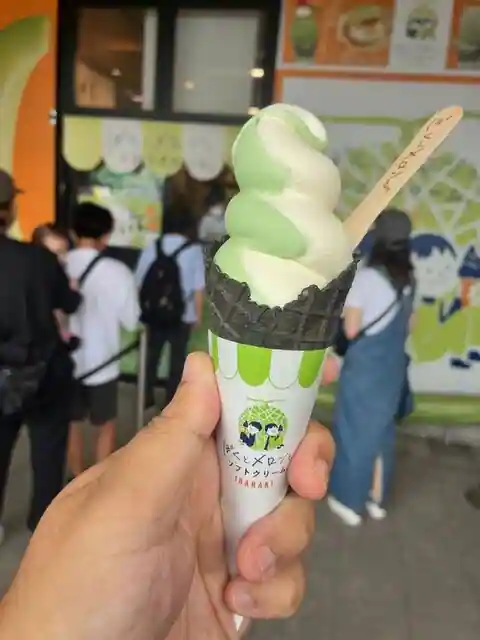
Bokuto Meron To Sofutokurimu.
中華そば あたり
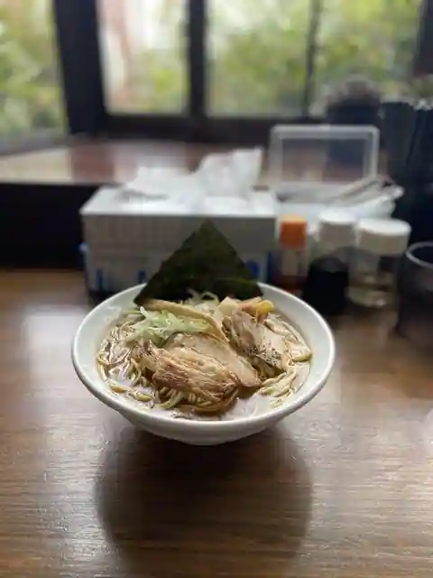
Chuka Soba Atari
春子屋 本店
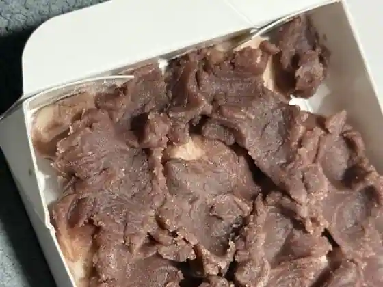
Haruko Ya Hon
クロサワ 西原店
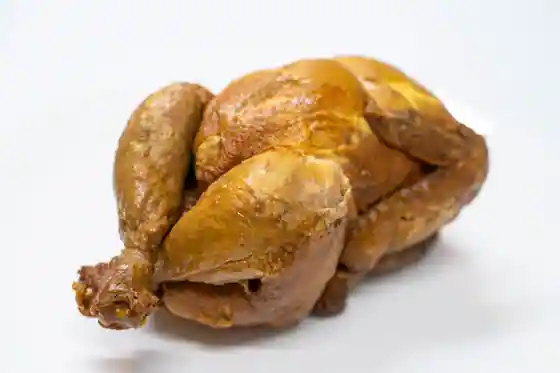
Kurosawa Nishihara
cafe GRANBERRY
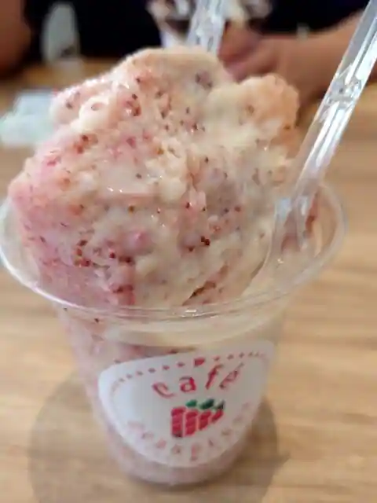
cafe GRANBERRY
たまご専門店 TAMAGOYA常総レストラン
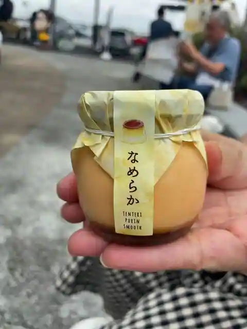
Tamago Senmon TAMAGOYA Joso Restaurant
春子屋 バイパス店
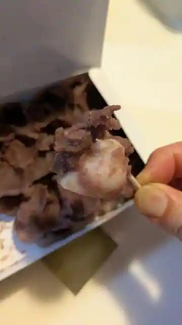
Haruko Ya Baipasu
志な乃
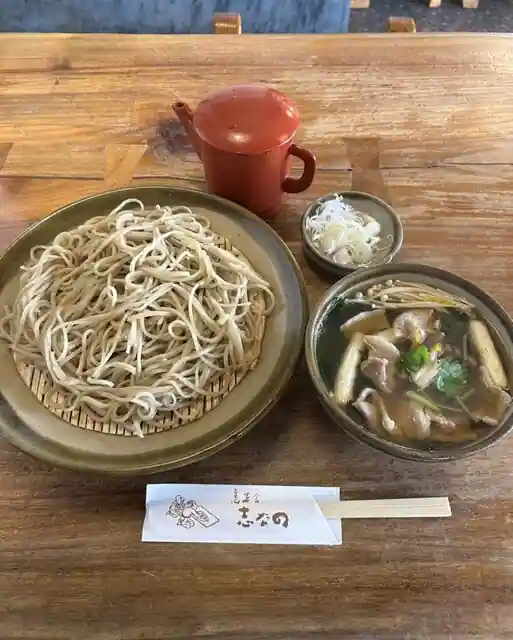
Kokorozashi Na No
とんこつ とん太
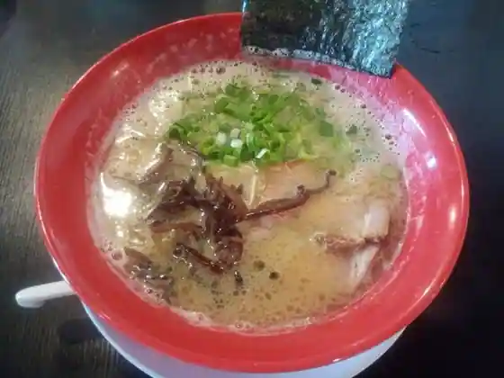
Tonkotsu Ton Ta
芋とわ
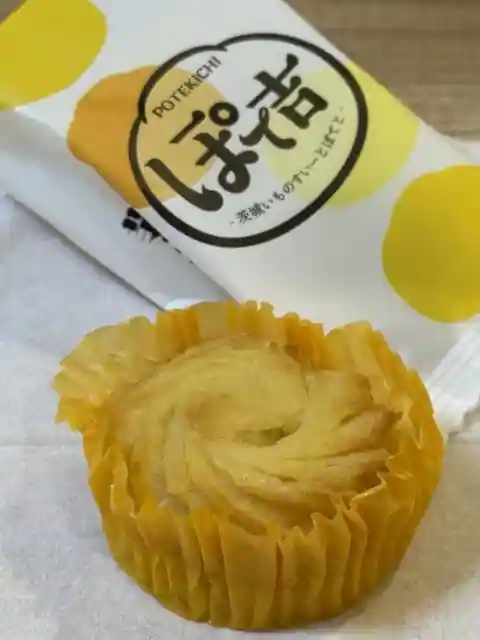
Imo Towa
大判屋食堂
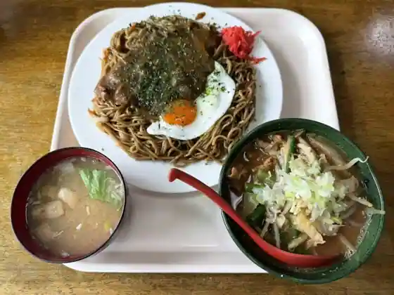
Oban Ya Shokudo
すぎ多
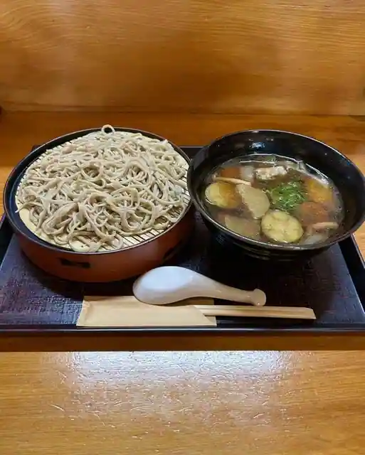
Sugi Ta
SENDA BANDA
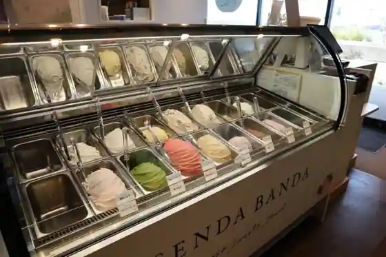
SENDA BANDA
太陽食堂
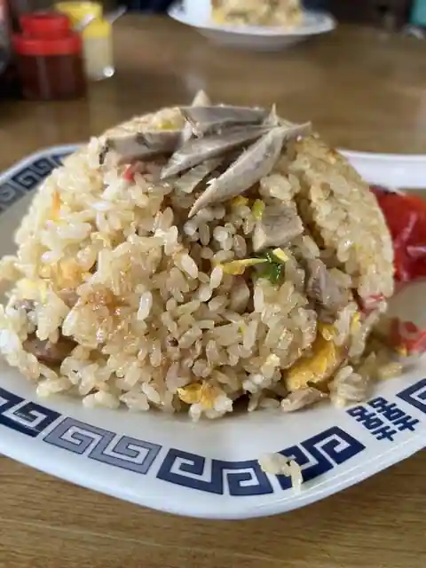
Taiyo Shokudo
生そばなかだ
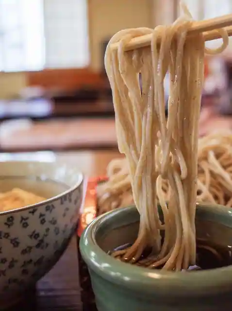
Naso Banakada
中村屋 石下店
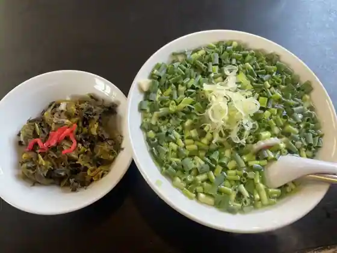
Nakamuraya Ishige
Sights
Toyoda Shiro (Joso Chiiki Koryu Center)
Roadside Station Joso

Tennen Onsen Kinu Baths

Kokei Tera

Mitsukaido Fudo Museum Sakano Ie House

Asunaro Village
Dai Nama Sato Tenmangu Shrine
Hitokoto Shu Shrine
GRANBERRY DAICHI
Yoshino Park
Sanchu Shuzo Mise
Hozo Tera Rui no Haka
Anraku Tera (Ganzan Taishi)
Babekyu Village Mori Village
Bando Hon Tera
The Natural Gardens of Sakano (Sakano Garden)
Nagatsuka Fushi no Seika
no Village Jozo
Katsu Taro Ishige Mise
Kauhiiya Ka Wa
Sakairi Seicha Kojo
Choji Sono